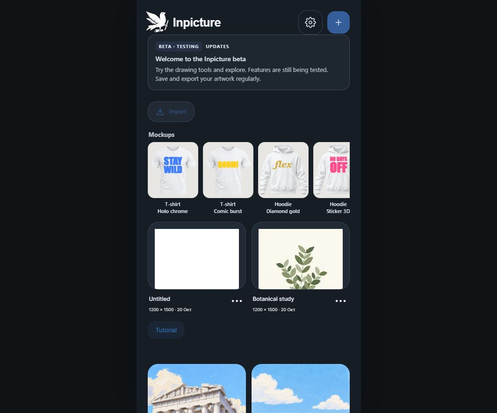
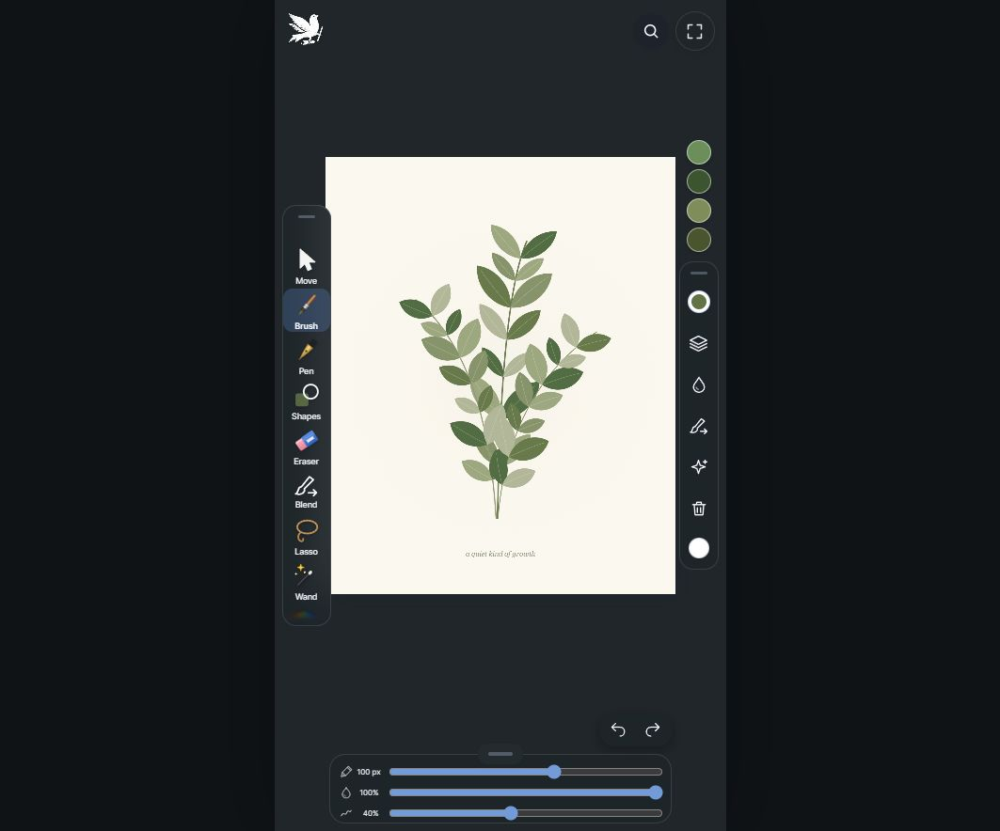
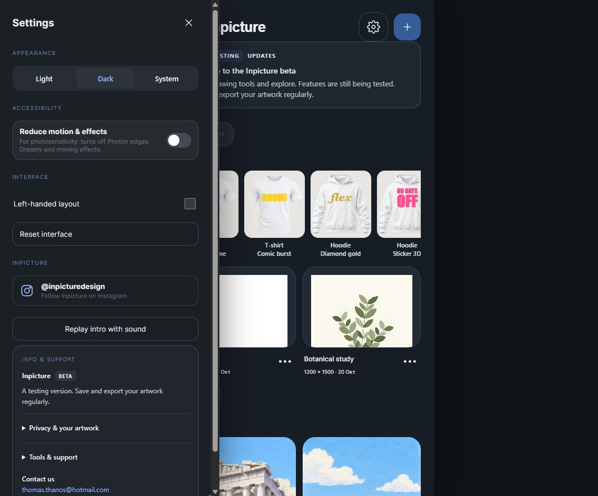

Find your stroke.
Expressive brushes, adjustable controls and colour palettes for your next idea.
From your first mark to the final layer.
Draw, paint and explore materials in Inpicture.
Google Play release coming after testing and review.
Expressive brushes, adjustable controls and colour palettes for your next idea.
Combine artwork, text and shapes. Explore blending and material effects.
Save editable projects locally and export PNG, JPG, WebP or SVG artwork.
Actual interface captures from the current browser preview. Android release screenshots are still to be verified.



Inpicture is in beta. Save and export backups regularly.